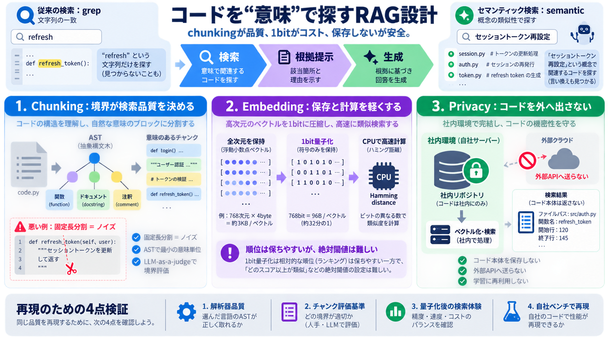

Building Production-Ready RAG Systems: Best Practices and Latest Tools
Latency Optimization: A production RAG pipeline introduces extra steps (retrieval, etc.), so keeping latency low is impo…

JetBrains Air Contextの初期設計を軸に、コードを「意味」で切り出し、保存と計算を極限まで抑える道筋をまとめます。
チャンク境界が検索品質を決める
1bit量子化でコストを崩さない
外部へコードを送らない
LLMが根拠を読むためには、質問に“意味が近い”コード断片を安定して取り出す必要があります。
検索品質はチャンク境界で決まり、運用コストはベクトル表現（次元/量子化/距離計算）で決まります。
ASTに基づく最小の意味的まとまりを保持
全次元を維持しつつ 1bit量子化（符号のみ）
行数ベースの分割は、importと関数本体のような意味的に無関係な断片を混ぜ、検索で読むべき根拠がノイズ化します。
意味の連結が切れる
ドキュメントが宙に浮く
関連断片の“品質”が落ちる
言語ごとの構造（AST）を使い、宣言・ドキュメント・注釈・終了構文などを“意味が断たれない”まとまりとして保持します。
構文解析（AST）
境界候補の生成
“最小まとまり”としてチャンク化
検索品質を評価可能に
“良さそう”を主観にせず、境界が不自然でないか（ドキュメントの宙ぶらりん等）をjudgeで判定します。
チャンクが自然に閉じるか
パイプライン変更時はエンドツーエンド評価
大規模リポジトリでは“数百万ベクトル”が支配的になり、精度議論より先に1ベクトルあたりのバイト数がコストを決めます。
ストレージが膨らむ
比較計算が重い
同じバイト予算で性能を最大化
全次元を保持したまま、極端に精度を落として1bit量子化（符号のみ）を選択し、距離計算をハミング距離へ置き換えます。
相対順位（関連が非関連より上）はある程度保てる一方、スコア分布が狭まり“絶対的な閾値で関連性判断”が難しくなる可能性があります。
順位付けは比較的維持
エージェントの「沈黙」判断に限界
クエリは自然言語指示、ドキュメントはコード片＋パスという非対称性があるため、学習時の形に合わせて整える工夫が重要です。
自然言語の指示（ユーザー）
コード断片＋パス（検索対象）
検索サーバはコード内容を保持せず、埋め込みリクエストは外部へ出さず、学習にも使わない方針が採られています。
この設計は筋が通っていますが、同等成果には対象言語・評価基準・量子化後の判断・自社ベンチが揃っているかの検証が必要です。
対象言語の解析器品質
チャンク評価の基準
量子化後の検索体験とエージェント判断
自社ベンチでの再現性
Latency Optimization: A production RAG pipeline introduces extra steps (retrieval, etc.), so keeping latency low is impo…
3. Query Ambiguity Enterprise queries frequently contain: incomplete instructions implicit context domain-specifi…
### Understanding the Challenges of RAG in Production RAG systems merge document retrieval with language generation by …
FlashRank emerged as a lightweight option for latency-sensitive deployments, offering re-ranking in under 50ms for typic…
We opted to use an LLM-as-a-judge strategy to inspect the chunks as a part of the evaluation. The judge, using a chunk a…